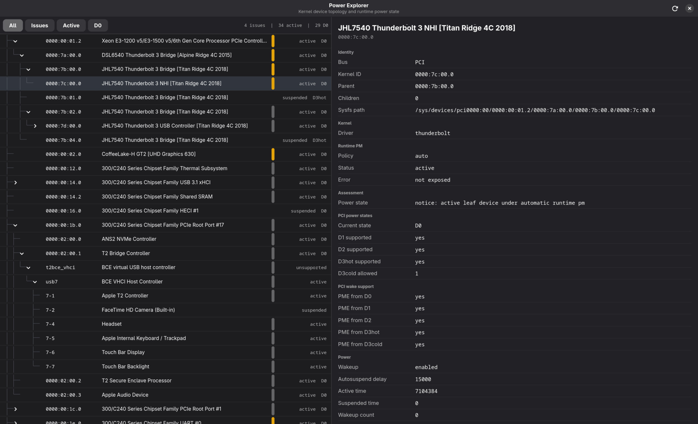
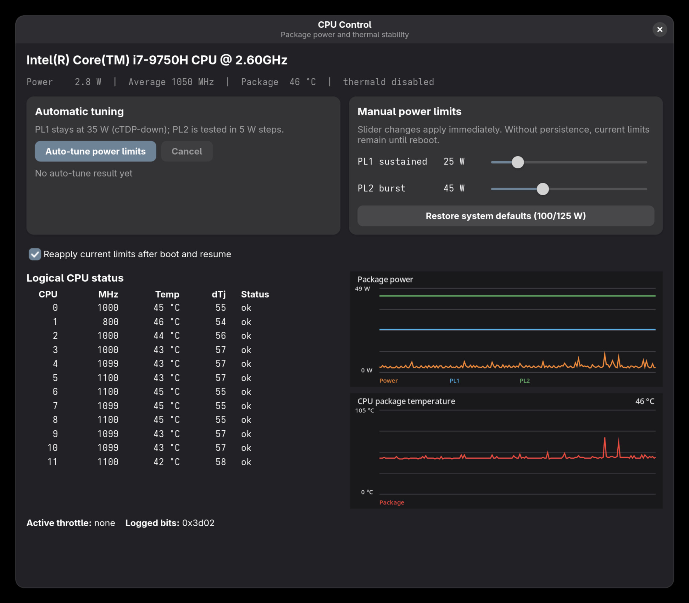

Where did the watts go?
Package C-states, PROCHOT and a forest of PCI devices turned power debugging into two new tools instead of another collection of shell commands.
Power debugging usually starts with one innocent question: why does this machine stop at package C3?
Then powertop shows a list of devices in D0, debugfs shows a few power islands
still on, one controller claims to be suspended without changing PCI state and
someone has changed all the tunables in the meantime. Twenty shell commands
later nobody remembers which bridge owns which device.
That is how T2 Power Explorer happened.
A device tree instead of a suspect list#
The first idea was to print devices that were not in D3. That was useful for a minute and misleading immediately afterwards. A device in D0 can be completely normal. A bridge can stay active because one child is active. A child can be unable to suspend because its driver never implemented it. Sorting these by a made-up "blocker probability" would only make the guess look scientific.
Power Explorer presents the machine as a tree instead. PCI bridges, GPUs, Thunderbolt controllers, USB hosts and their children remain connected the way the hardware is connected. Select one and the app shows runtime status, power control, D-state capabilities, link state and the warnings we can establish without pretending to know more than the kernel tells us.
For the first time it became possible to click through the machine and understand why a device exists before deciding that it must be the problem.

One typical before-and-after measurement on the 15,1 was:
Package C7: 0
Package C8: 0
Package C9: 0
Package C10: 0
After the PCIe and Thunderbolt path was cleaned up, package C7 finally started accumulating. That did not prove every device was perfect, but it proved the platform could cross the boundary at all.
Power under load is a different problem#
Idle power led us to package C-states. Load testing led us to PROCHOT.
Apple's factory CPU power limits can be extremely optimistic under Linux. On a clean MacBookPro15,1 we saw short power limits far beyond what the cooling system can remove. The result was not free performance. It was a hot heatsink, rapid throttling and, in the worst cases, an external PROCHOT signal pulling all logical CPUs down at once.
T2 CPU Control grew out of the monitor we used to separate thermal throttling, power limits and those external events. It can show the active limits and tune them against a real kernel build. The goal is not the largest number on a slider. It is useful short-term speed without turning sustained work into a frequency roller coaster.

Both tools came from the same lesson: power management becomes much easier when the relationships are visible. A list of red values is not an explanation.
Wi-Fi is another part of the same package C-state work. Alexander Fischer,
better known as @4f1sh3r the God of Install, is working on the
opt-in PM_MAX series tracked in
Patchwork.